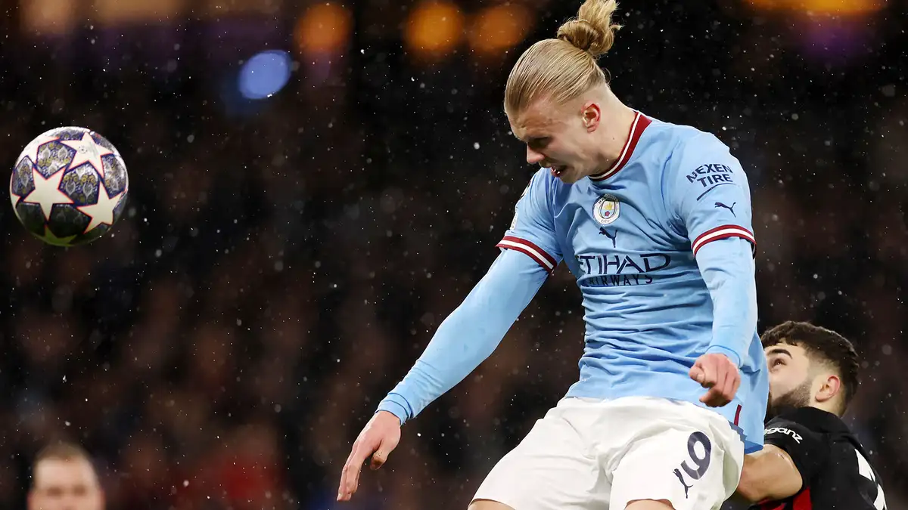

- Site relacionado na parte esportiva de Futebol!
- Apresentar links para facilitar na busca de assisitir ou ficar por dentro do que esta acontecendo nos jogos!
- Nessa parte de baixo estaram sites tanto para assistir e ficar por dentro dos jogos em tempo real!
| Empresa | Descrição | Contato |
|---|---|---|
| Futblitz | Facilita para usuarios | Futblitz.ehgunz7@gmail.com |
Site criado por Gustavo Sartorelli, bem basico.. mais aprendendo cada vez mais...
Precisa de um site desses tipos para facilitar pessoas que necessitam de ajuda.. na procura de site de jogos ao vivo!